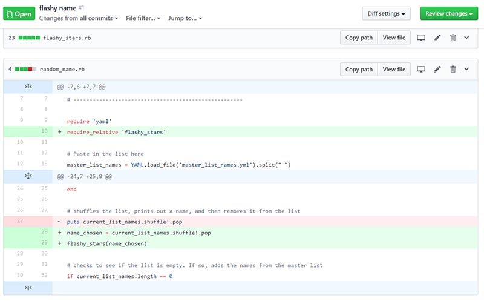

100 Days of Code

The Challenge
Here I will put the details of the challenge
| Start Date | End Date |
|---|---|
| 8th April 2019 | --- |
Goals
- Keep on top of my Diploma of I.T. class and do all the work
- Complete my portfolio
- Do my own fun personal projects in code
- Become proficient in using the Vim extension in VS Code
Daily Log
16. More Microblog Making
Day 2: Date, Day
Worked On
- Flask Microblog Lesson 4
- SQLAlchemy
Progress
SQL
Links
- Flask Microblog
15. Starting a Microblog!
Day 15: Wednesday 1 May 2019
Worked On

- Creating a Microblog with the Flask Mega Tutorial - Completed Chapter 3
Progress
OK, so on Monday and Tuesday I had assessment at school, so technically I was doing some coding stuff. But honestly I'd rather forget all that. So, instead, today is day 15.
We have started html at my Dip of IT, and next week we are doing CSS. I... I like making websites but I am soooooooo unenthused with the thought of doing HTML and CSS as a career. I'm much more excited by either the full stack or the back end.
So, with that in mind, today I have started the Flask Mega Tutorial.
It's a great tutorial, so far at least. Really easy to follow, and great to understand what's going on. I look forward to building more. I am hoping to use what I learn with this tutorial to build a blogging platform for myself. That would be really cool. I am actually not too sure if my current hosting will allow me to deploy it. That sucks. But, I will worry about that when I get to it.
I am also doing a presentation on Friday evening about Vim and VS Code. Hopefully that goes alright. Today while working on the flask tutorial I used vim to create my files etc. It was just so quick to pop in and out of files.
Links
- Flask Mega Tutorial
- Video - Vim Saves Time - This is really cool and I'm going to steal some of the stuff he did and put it in my speech to impress people on the vim
14. Flask
Day 14: Sunday 29 April 2019
Worked On
- Thinking about this website.
Progress
I've been thinking a bit about this website today. I really want to make my own blogging CMS. Yes, I know there are lots of options out there. I have used many. But I am looking forward to the challenge of making my own.
I want to do it in python. Mainly because I will be learning rails at school, I'll be doing express and the whole MERN stack at school. I really want to solidify my python knowledge. I want to also be able to put a python framework on to my resume. And because I want to.
It'll be slow going. I'm hoping to do it during my school holidays that are in a month. I mean, I could spend that time studying for the next term. Or spending it having a break from programming (which may happen anyway, lol). But it sounds fun.
I spent today wondering - Flask or Django? I'm leaning towards Flask. But, wondering if that is limiting myself, and I should go hard or go home (Django sounds more hardcore? I don't know much, though). But, I think I'll go Flask. I can always change it later, right? (lol, I'll never have time to change it).
I feel like I'll be gently wetting my feet with flask, and that Django might have future extensibility, but .... I dunno. I need to make a decision, so I guess I'll do Flask.
Links
- Data Structures in Ruby - I read through a little of these. They are making more sense now then they have in the past. Yay.
- Flask Blogging
- Video: Web Programming in Flask - I've watched about half of this. It's similar to Express.js which I've done a teeny tiny amount, and my skills in that are transferable so far. Looking forward to giving this a go!
13. Slowly Recovering
Day 13: Saturday 27 April 2019
Worked On

- Completed ruby challenges - 16 - 18, and also refactored 14 & 15.
Progress
Still so burnt out from the assignment, I feel like I can't do anything exciting, even though I'd really like to work on my music app. Instead, late at night, I managed to do some ruby algorithm challenges.
I signed up to do a talk on Vim and VS Code. Hopefully it'll go well - I'm no where near an expert in this, I've only been doing it for around 5 weeks I think. But I guess I like a challenge.
Links
- Mode Dependant Relative Line Numbers - I can't get it to work, though. Sad face.
- Still getting my head around map vs each vs select - I believe each returns the original value, where as map returns a new value. More research to be done.
- JS for Cats - Will explore this more later!
11 & 12. Working on Assignment
Day 11 & 12: Tuesday, Wednesday 23 & 24 April 2019
Worked On

- Purr Seasons Cat Hotel - class assignment, ruby terminal app.
Progress
Working on my assignment. On a tight deadline. Now I don't want to even look at the code to see all the things we (my teammate and I) could have done better. It is done.
10. Updating Progress
Day 10: Monday 22 April 2019
Worked On

Progress
The days have passed and I have only really missed one day where I have done 0 coding, but I have missed recording here. It's too much trouble to go back, so I'm just going forward and calling today day 10. I do have a lot of links to share that I've been saving for this place, though..
I can't remember what exactly I've been up to. I did make a super simple Medication Tracker - it was an idea for a CLI app for as assignment (which I have to make tomorrow!!), but we have decided on another idea. I made this up fairly quickly to practice my OOP. I am slowly getting better.
I have started reading "Practical Object Oriented Design in Ruby" by Sandi Metz. I haven't gotten far into it, but it has already been interesting and helpful. I'm wondering, though, in her examples of variable names in her classes she is using
variable_name@variable_nameI also finished the SoloLearn Ruby course and got my pretty certificate, lol. I don't think SoloLearn is a good place to learn, but it is a nice place to get different examples of the concepts you've learnt elsewhere.
Tomorrow, back to the grind... My first assignment for my Dip of IT course - will be making a MVP CLI app in ruby with a partner. I think we are going to do TDD and Pair Programming. It's going to be fun!
Links
- Ruby Warrior
- Microsoft Inclusive Design Guide
- "Unmasked": What 10 million passwords reveal about the people who choose them - I found this to be an interesting read about passwords, and also to see what some real world executives have used as passwords.
- In Defense of the Ternary Statement - I need to use this more
- Ruby Map Method - I was reading this for something...
9. TDD
Day 9: Tuesday 16 April 2019
Worked On
Progress
Class today (what I heard - I was home with a sick kid) was about Test Driven Development, and it made a lot of sense. I already do this but in a really informal way. And, of course, up until this point my projects have been small in scope, so have been easy to test. It was good to see how TDD comes together with an OOP approach to programming.
I didn't actually do much coding today. I did one of the daily challenges, and I refactored my fizzbuzz after getting some ideas from youtube. I don't feel like I really achieved much coding wise today, but I guess it is good to have a rest day.
Links
- What is test driven development?
- How to write testable code
- Introduction to TDD
- Regex One
- Regex Trainer
- Software Engineer Resume
8. Sssssssnake!
Day 8: Monday 15 April 2019
Worked On

Progress
Today I made a minimum viable snake game! There are a lot of features to add, but the game works!
The thing I had the most trouble with was just getting the syntax right for the randomly spawning food - I kept on leaving a step out. But, happily, even with that, my idea in my head worked. So it came together really quickly.
Last night I went to bed with a half formed idea of how I was going to make the trailing snake tail follow the head, but as I lay in bed the solution came to me, and luckily I had already been setting it up in the way that my solution could build upon.
I also got some more practice using classes out of it. I think classes, and how to structure a program and bring it all together - I may be getting better at this.
I still have a list of things I could do to improve the program. Such as: Get the snake to move by itself. Allow the user to choose easy/med/hard - this will determine the speed of the game. I still need to make the game to end when you collide with yourself or the wall. I want to save a high score. And, I need to change the walls into emoji. The game must go full emoji.
It's really fun to make games. I plan to continue to do them for fun. I actually have an idea I want to explore in C# and Unity. When I have time, lol.
7. Started Snake
Day 7: 14 April 2019, Sunday
Worked On
- Daily Coding Challenge - Fibonacci
- Snake Game
Progress
The kids are sick. I hope I don't get sick...
Plus I've been feeling a bit burnt out and deflated by my attempt at using classes to create my cafe app. I needed something fun. But what? I was having trouble coming up with something fun.
I have been inspired by @CodeTravelled's go at doing first a Tic-Tac-Toe game, and then a Pac-Man game! I wanted to do a game too. Still feeling a bit meh, I had to look up a list of old retro games, and decided on snake. I managed to set up the board, get a head moving around the screen, and then the start of a body to come out of the head. I couldn't get anything more done with the sick kids.
Links
6. Just some exercises
Day 6: 13 April 2019, Saturday
Worked On
- Done with my cafe. No, really, I'm done.
- Completed Challenge 12 - Count Words
- Changed Challenge 9 - Vowels
Progress
I said I was done with my cafe, but then I made some small changes. First, I just made it so that it doesn't matter how many items you add to the cafe, you don't have to adjust any of the code. That was the main difference, the other thing I did was just expand on some of my comments and cosmetic stuff to make it pretty.
I really wanted to have it so that it had two classes - in my mind I would have one class for an item, recording it's cost and price. And then another class to capture an order, with an item, and the qty. But, I just can't get it to work atm and I feel like I could get it to work, but I am just not getting it right now. Ugh. But, the cafe is done. I'll stop playing now.
I also played around with some of the challenges. In particular, when looking to solve no. 12, I wanted to learn how to do things more with one line. So I was looking at that online, as well as adding regex in so that my code would ignore the punctuation. I thought, since I was looking up regex, I would also change no. 9 - this one counts vowels. I did it before with a huge `if letter == "a" && letter == "e"` etc. I knew it could be done with regex, but at the time I wanted to try without it. This time, I looked up the regex and did it again (also trying to do the loop on one line). I feel like I need more practice still writing loops on one line by myself, and I definitely don't remember how to regex, but I understand what is happening and applying the knowledge myself will come soon enough, with some more practice.
5. Backing Away Slowly from the Cafe
Day 5: 12 April 2019, Friday
Worked On
{kind=link}
- Cafe ordering script utilizing classes
- Used a fellow classmate's code to update my name generator, and then did my first pull request!
- Daily Challenge - FizzBuzz
Progress
That cafe script. My problem is trying to access information which is a (and I'll probably use the wrong terminology here) a class object that is a hash of items that I get from my items class. I am trying to turn a string into a variable name. I'm wondering if because I have to do this, I've structured the script in a convoluted way (it sure feels like it). This is why I keep giving up.
I think I may be having trouble changing my mindset from Procedural Programming to OOP. Don't get me wrong, I can understand classes and I have made a version of my cafe app using one class. What I am having trouble with is making everything more object orientated, and my planning the cafe out on paper didn't help when it came to putting it all together.
I did a bit of research on OOP. I think I just need practice, but I am done with the cafe business. It could be fun to try a game instead, to practice using classes and OOP.
Links
- OOP: You're Doing It Completely Wrong
- How Do I Make the Transition from Procedural to OOP
- A Laboratory For Teaching Object-Oriented Thinking
- Design Patterns
4. Classes Conquer Me?
Day 4: 11 April 2019
Worked On
- My cafe challenge using classes
- Challenge 10 of my courses daily challenges
Progress
I tried to make my vision for my Cafe app work, using multiple classes in the one project, but I dunno... I dunno...
My vision was to have two separate classes (items and order), but I was having trouble to make the whole thing work. My trouble was trying to get the items to be added to the order and then the qtys to be updated. I feel like I am making it too complicated and I have the two classes too entwined with each other, but I am having trouble picturing how it is supposed to be structured. I have drawn out diagrams and such. I would have an epiphany, move forward a bit, but then somehow feel like it is still not working how it should be working.
One thing I like about what I was doing, however, was making it so that if you add more items you wouldn't have to update the rest of the code.
I gave up in the afternoon and redid the exercise with one class. It works...
Later in the evening I was talking out what I had done with my partner (rubber ducking I guess), and I kind of motivated myself to keep pushing with the Cafe challenge. Right now it's in a folder called failed_attempt - let's see if I can turn that around...
3. Class Confusion in Ruby
Day 3: 10 April 2019 - Wednesday
Worked On
- Learning more about classes - inheritance and modules
- Listening to motivational talk by Josh Wulf
- Trying to apply my "knowledge" on classes in a cafe challenge.
Progress
In class today I learnt about inheritance and modules with classes. I get understand the concept, but I definitely need more practice in applying classes in my projects.
In class we had a talk by Josh Wulf, who created magikcraft (ooh, look, that website is using the same template as here!). The quote I wrote down was:
"Create cool things and make a difference in the world." -Josh Wulf
He also spoke about participating in open source projects, participating in conferences, as well as personal and professional development within the software engineering space.
I have been trying to apply what I've learnt about classes to a challenge about orders in a cafe, but I am confusing myself. Hopefully some sleep will help.
Links
2. Classes in Ruby
Day 2: 9 April 2019 - Tuesday
Worked On
- Completed Daily Challenge - counting vowels. But I know there is a better solution.
- Learning about classes in Ruby
- Redoing my bank app from scratch - this time using classes.
Progress
Classes and OOP is something that I have touched on before, but I definitely need more practice using and applying my knowledge. I'm glad that we are up to this section in my course, and I'm excited to move forward with this. Hope I can get my head around it easily.
Our task in class was to create a class about a cat who went for walks - recording where they went on walks, the distance and such. I am using Vim for VS Code (I really like it, but just need to keep practicing and changing some of the keyboard shortcuts that have overridden some things). I had been in insert mode for a long time, and I dunno what happened but Vim suddenly went into normal mode and deleted all my hard work!! And I freaked out, pressed a bunch of random buttons, and lost the ability to redo my work. Annoying!
However, I had worked out what I was doing by that point and it was quick to redo everything I had done. Thank goodness.
1. Methods/Functions
Day 1: 8 April 2019 - Monday
Worked On

- Wrote a random name generator for picking volunteers for doing things in my class
- Ping Pong - a skill all coders must master, it seems
- Trying to learn as much as I can about classes and OOP
Progress
Class was not challenging today for me. We went over functions in ruby, which they call methods. I like the word functions better.
We started to talk about OOP, though, which is good because I don't have much experience with that yet. I think I have the basics down, but I look forward to having a deeper understanding of it and how to use it in my programming.
I practiced my ping pong today. This is a skill I really need to work on if I'm going to make it in this industry...
I also quickly whipped up a little random name generator that is aimed at selecting someone to do something in class (such as share their solution to a problem). I would love to turn this into a bot for our slack channel.
Links
Pre-launch - Getting Ready for the Challenge
Day 0: 7 April 2019 - Sunday
Worked On
- This website
- Ruby Daily Challenge - Counting Letters
- Working on Vim extension in VS Code
Progress
I am all about the memory keeping, and I wanted a fun place to experiment with my web stuff since I have let a lot of past domain names expire. So, I've now got this place!
I am currently about to go into week three at a coding boot camp, and so apart from wanting to have a place to play, I also wanted a place to record my progress in coding. Thus, I have decided to participate in the 100 Days of Code, and record my coding journey here.
Today, I'm calling it a pre-launch and I'll officially start tomorrow. Today I am just quickly setting up this webpage using a template and getting some content up. I also did one of the coding challenges for my course, and through both of these I've been practicing using the Vim extension in VS Code. I think I'm slowly getting the hang of it - getting faster at some things, at other times completely slowing down my workflow because I'm not doing what I want to do. Still, I am confident I can use Vim tomorrow when I go to school.
Links
- James Priest - 100 Day of Code - Shamelessly got a lot of ideas for the layout for this page from James. Thank you!
- 100 Days of Code website - I actually need to read this, lol. I haven't yet...
- HTML5up - Template from here. I look forward to creating my own design soon, though. Just needed something pretty up first.